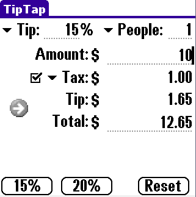
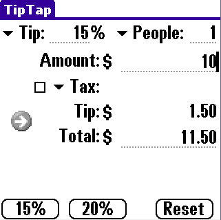
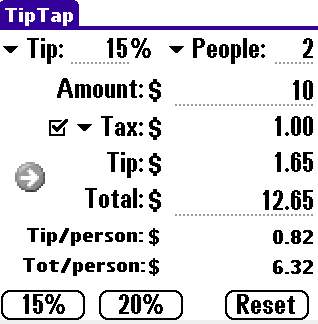
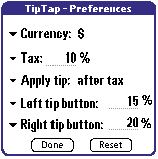

TipTap 2.0 PalmOS (3.x - 4.x - 5.x/Garnett - 6.x/Cobalt)
This program allows to calculate the tip from a specified amount. 15% and 20% buttons are present, and they can customized by the user to the most used tip percentages. Custom tip (from 1% to 95% or user input) is also allowed. Sales Taxes can be added, and the percentage can be customized by the user. Typing the total allows also to get the amount before the tip. The total amount is divided by the number of people (as specified in the new field).
This program is FREE.
Download:
PRC File
(22K - 26K - 31K depending on your device)
ZIP File (8K)
New features:
- New color and High resolution icons.Installation information:
Use HotSync to install the .prc file. It is strongly recommended to
uninstall previous versions of TipTap before upgrading.
Contact info:
If you have questions, suggestions or if you want to report a bug:
feranick @ hotmail.com
Screenshots
|  |  |  |  |
History
(v.2.0) Major code optimization and stability improvements, with reduced memory usage. New color and High resolution icons. User manual improvements.
(v.1.9) Option for the what to apply the tip to: before tax, after tax. Fixed bug while closing the preference menu.
(v.1.8) The number of people the amount is split to, can now be entered also with a drop-down menu. User Interface (UI) improvements. Fixed several UI bugs. New graphic button for conversion. The icon is displayed correctly in the PalmOne Zire72.
(v.1.7) New field to add sales taxes to the calculation. Sales taxes can be customized. Initial screen reorganization and cleanup. Code optimization and general bug fixes.
(v.1.6) Popup keypad and Graffiti help added.
(v.1.5) A new preferences panel allows the user to select the currency and to customize the percentage of the two tip buttons on the main screen. A new "Tip/person field has been added. Improved user manual.
(v.1.4) The tip field allows now the user to input the desired tip. The tip field is now saved when exiting the program. The program remembers the tip percentage when opened. Improved user interface.
(v.1.3) Introduced a new field for the "number of people". TitTap calculates the total amount divided by the number of people.
(v.1.2) Bug fixed in the calculation. Higher numbers are allowed.
(v.1.1) A manual has been added. It is now possible to enter the total and to get the amount before tip.
(v. 1.0.1) Mathlib no longer required
(v. 1.0) First public release